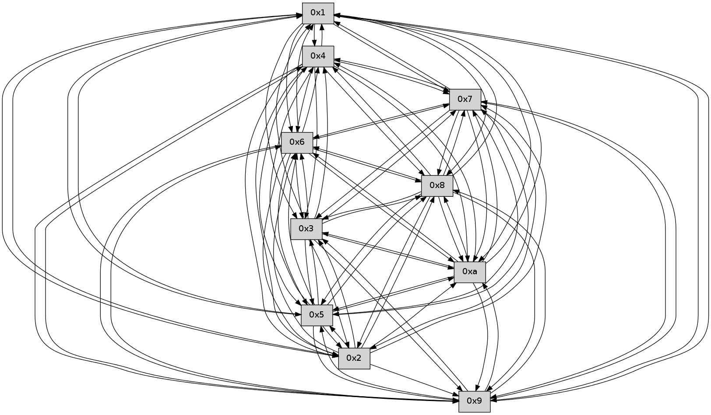

>> << IDX [start] -100 -25 -5 +0 +5 +25 +100 [440.205611944]
 Previous packets
----------------------------------------------------------------------
435.476819 beacon01(faad) #0 coord=01,02,03,04,05,06,07,0a,09,08 cycle=688.0ms assoc
-- color-indic=0 64 25 21
435.486803 beacon02(faad) #0 coord=01,02,03,04,05,06,07,0a,09,08 cycle=688.0ms assoc 64 b6 10
435.496802 beacon03(faad) #0 coord=01,02,03,04,05,06,07,0a,09,08 cycle=688.0ms assoc 64 cc 5d
435.506801 beacon04(faad) #0 coord=01,02,03,04,05,06,07,0a,09,08 cycle=688.0ms assoc 64 bb b7
435.516803 beacon05(faad) #0 coord=01,02,03,04,05,06,07,0a,09,08 cycle=688.0ms assoc 64 c1 fa
435.526803 beacon06(faad) #0 coord=01,02,03,04,05,06,07,0a,09,08 cycle=688.0ms assoc 64 4f 2d
435.536802 beacon07(faad) #0 coord=01,02,03,04,05,06,07,0a,09,08 cycle=688.0ms assoc 64 35 60
435.546807 beacon0a(faad) #0 coord=01,02,03,04,05,06,07,0a,09,08 cycle=688.0ms assoc 64 44 6b
435.556807 beacon09(faad) #0 coord=01,02,03,04,05,06,07,0a,09,08 cycle=688.0ms assoc 64 ca bc
435.566811 beacon08(faad) #0 coord=01,02,03,04,05,06,07,0a,09,08 cycle=688.0ms assoc 64 b0 f1
435.578278 [Hello(7): seq=281 sym=2,3,5,6,4,8,9,10,1 sysInfo= stat=2:4,0,0,0/3:1,0,0,0/5:5,0,0,0/6:4,0,0,0/4:15,0,0,0/8:7,0,0,0/9:9,0,0,0/10:14,0,0,0/1:6,0,0,0]
435.580980 [Hello(6): seq=281 sym=2,3,5,4,7,9,8,10,1 sysInfo= stat=2:3,0,0,0/3:6,0,0,0/5:15,0,0,0/4:7,0,0,0/7:12,0,0,0/9:13,0,0,0/8:1,0,0,0/10:14,0,0,0/1:3,0,0,0]
435.586269 [Hello(1): seq=190 sym=4,2,9,5,10,3,8,6,7 sysInfo= stat=4:6,0,0,0/2:12,0,0,0/9:14,0,0,0/5:9,0,0,0/10:9,0,0,0/3:15,0,0,0/8:11,0,0,0/6:7,0,0,0/7:12,0,0,0]
----------------------------------------------------------------------
436.264951 beacon01(faad) #0 coord=01,02,03,04,05,06,07,0a,09,08 cycle=688.0ms assoc
-- color-indic=0 64 99 24
436.274934 beacon02(faad) #0 coord=01,02,03,04,05,06,07,0a,09,08 cycle=688.0ms assoc 64 0a 15
436.284935 beacon03(faad) #0 coord=01,02,03,04,05,06,07,0a,09,08 cycle=688.0ms assoc 64 70 58
436.294934 beacon04(faad) #0 coord=01,02,03,04,05,06,07,0a,09,08 cycle=688.0ms assoc 64 07 b2
436.304934 beacon05(faad) #0 coord=01,02,03,04,05,06,07,0a,09,08 cycle=688.0ms assoc 64 7d ff
436.314934 beacon06(faad) #0 coord=01,02,03,04,05,06,07,0a,09,08 cycle=688.0ms assoc 64 f3 28
436.324935 beacon07(faad) #0 coord=01,02,03,04,05,06,07,0a,09,08 cycle=688.0ms assoc 64 89 65
436.334940 beacon0a(faad) #0 coord=01,02,03,04,05,06,07,0a,09,08 cycle=688.0ms assoc 64 f8 6e
436.344939 beacon09(faad) #0 coord=01,02,03,04,05,06,07,0a,09,08 cycle=688.0ms assoc 64 76 b9
436.354941 beacon08(faad) #0 coord=01,02,03,04,05,06,07,0a,09,08 cycle=688.0ms assoc 64 0c f4
436.370708 [Hello(5): seq=282 sym=7,6,4,3,1,9,8,10,2 sysInfo= stat=7:1,0,0,0/6:5,0,0,0/4:5,0,0,0/3:14,0,0,0/1:15,0,0,0/9:4,0,0,0/8:11,0,0,0/10:14,0,0,0/2:7,0,0,0]
436.373730 [Hello(10): seq=214 sym=6,3,2,5,9,8,7,4,1 sysInfo= stat=6:11,0,0,0/3:7,0,0,0/2:12,0,0,0/5:5,0,0,0/9:7,0,0,0/8:0,0,0,0/7:0,0,0,0/4:8,0,0,0/1:1,0,0,0]
436.385376 PARSE ERROR************************
Traceback (most recent call last):
File "PacketAnalysis.py", line 167, in showOperaPacket
structPacket = OperaPacketParse.parsePacket(rawPacket)
File "../../pkg-python/HipSens/Core/OperaPacketParse.py", line 461, in parsePacket
return parseHelloMessage(data)
File "../../pkg-python/HipSens/Core/OperaPacketParse.py", line 125, in parseHelloMessage
struct.unpack("!H",linkList[:2])[0])
error: unpack requires a string argument of length 2
48 34 09 00 00 e1 00 02 02 12 05 00 02 00 03 00 04 00 07 00 06 00 08 00 0a 00 01 00 53 04 00 00 00 00 4c 12 00 05 00 00 00 02 00 0f 00 08 00 02 00 0d 00 05 00 07 4d d1
----------------------------------------------------------------------
437.053084 beacon01(faad) #0 coord=01,02,03,04,05,06,07,0a,09,08 cycle=688.0ms assoc
-- color-indic=0 64 ad 3c
437.063066 beacon02(faad) #0 coord=01,02,03,04,05,06,07,0a,09,08 cycle=688.0ms assoc 64 3e 0d
437.073067 beacon03(faad) #0 coord=01,02,03,04,05,06,07,0a,09,08 cycle=688.0ms assoc 64 44 40
437.083067 beacon04(faad) #0 coord=01,02,03,04,05,06,07,0a,09,08 cycle=688.0ms assoc 64 33 aa
437.093068 beacon05(faad) #0 coord=01,02,03,04,05,06,07,0a,09,08 cycle=688.0ms assoc 64 49 e7
437.103066 beacon06(faad) #0 coord=01,02,03,04,05,06,07,0a,09,08 cycle=688.0ms assoc 64 c7 30
437.113069 beacon07(faad) #0 coord=01,02,03,04,05,06,07,0a,09,08 cycle=688.0ms assoc 64 bd 7d
437.123071 beacon0a(faad) #0 coord=01,02,03,04,05,06,07,0a,09,08 cycle=688.0ms assoc 64 cc 76
437.133073 beacon09(faad) #0 coord=01,02,03,04,05,06,07,0a,09,08 cycle=688.0ms assoc 64 42 a1
437.143073 beacon08(faad) #0 coord=01,02,03,04,05,06,07,0a,09,08 cycle=688.0ms assoc 64 38 ec
437.154241 [Hello(6): seq=282 sym=2,3,5,4,7,9,8,10,1 sysInfo= stat=2:3,0,0,0/3:7,0,0,0/5:0,0,0,0/4:7,0,0,0/7:12,0,0,0/9:14,0,0,0/8:2,0,0,0/10:15,0,0,0/1:4,0,0,0]
437.158566 [Hello(1): seq=191 sym=4,2,9,5,10,3,8,6,7 sysInfo= stat=4:6,0,0,0/2:12,0,0,0/9:15,0,0,0/5:10,0,0,0/10:10,0,0,0/3:0,0,0,0/8:12,0,0,0/6:7,0,0,0/7:12,0,0,0]
437.166575 [Hello(7): seq=282 sym=2,3,5,6,4,8,9,10,1 sysInfo= stat=2:4,0,0,0/3:1,0,0,0/5:6,0,0,0/6:5,0,0,0/4:15,0,0,0/8:8,0,0,0/9:10,0,0,0/10:15,0,0,0/1:7,0,0,0]
----------------------------------------------------------------------
437.841216 beacon01(faad) #0 coord=01,02,03,04,05,06,07,0a,09,08 cycle=688.0ms assoc
-- color-indic=0 64 11 39
437.851198 beacon02(faad) #0 coord=01,02,03,04,05,06,07,0a,09,08 cycle=688.0ms assoc 64 82 08
437.861199 beacon03(faad) #0 coord=01,02,03,04,05,06,07,0a,09,08 cycle=688.0ms assoc 64 f8 45
437.871200 beacon04(faad) #0 coord=01,02,03,04,05,06,07,0a,09,08 cycle=688.0ms assoc 64 8f af
437.881200 beacon05(faad) #0 coord=01,02,03,04,05,06,07,0a,09,08 cycle=688.0ms assoc 64 f5 e2
437.891200 beacon06(faad) #0 coord=01,02,03,04,05,06,07,0a,09,08 cycle=688.0ms assoc 64 7b 35
437.901201 beacon07(faad) #0 coord=01,02,03,04,05,06,07,0a,09,08 cycle=688.0ms assoc 64 01 78
437.911204 beacon0a(faad) #0 coord=01,02,03,04,05,06,07,0a,09,08 cycle=688.0ms assoc 64 70 73
437.921203 beacon09(faad) #0 coord=01,02,03,04,05,06,07,0a,09,08 cycle=688.0ms assoc 64 fe a4
437.931185 beacon08(faad) #0 coord=01,02,03,04,05,06,07,0a,09,08 cycle=688.0ms assoc 64 84 e9
437.943335 [Hello(2): seq=280 sym=4,5,7,6,3,9,8,10,1 sysInfo= stat=4:0,0,0,0/5:15,0,0,0/7:0,0,0,0/6:6,0,0,0/3:13,0,0,0/9:7,0,0,0/8:7,0,0,0/10:10,0,0,0/1:13,0,0,0]
437.947117 [Hello(3): seq=283 sym=1,7,6,2,4,8,9,10,5 sysInfo= stat=1:7,0,0,0/7:12,0,0,0/6:8,0,0,0/2:6,0,0,0/4:11,0,0,0/8:6,0,0,0/9:3,0,0,0/10:9,0,0,0/5:4,0,0,0]
437.951579 [Hello(8): seq=226 sym=5,2,3,4,7,6,9,10,1 sysInfo= stat=5:13,0,0,0/2:2,0,0,0/3:0,0,0,0/4:3,0,0,0/7:8,0,0,0/6:15,0,0,0/9:11,0,0,0/10:4,0,0,0/1:8,0,0,0]
437.954929 [Hello(4): seq=283 sym=5,7,6,2,3,9,8,10,1 sysInfo= stat=5:3,0,0,0/7:5,0,0,0/6:9,0,0,0/2:4,0,0,0/3:13,0,0,0/9:7,0,0,0/8:0,0,0,0/10:12,0,0,0/1:0,0,0,0]
437.957375 [Hello(5): seq=283 sym=7,6,4,3,1,9,8,10,2 sysInfo= stat=7:2,0,0,0/6:6,0,0,0/4:5,0,0,0/3:15,0,0,0/1:0,0,0,0/9:5,0,0,0/8:11,0,0,0/10:15,0,0,0/2:7,0,0,0]
437.960698 [Hello(10): seq=215 sym=6,3,5,9,8,7,4,1 sysInfo= stat=6:12,0,0,0/3:8,0,0,0/5:5,0,0,0/9:8,0,0,0/8:0,0,0,0/7:1,0,0,0/4:8,0,0,0/1:2,0,0,0]
----------------------------------------------------------------------
438.629348 beacon01(faad) #0 coord=01,02,03,04,05,06,07,0a,09,08 cycle=688.0ms assoc
-- color-indic=0 64 d5 37
438.639330 beacon02(faad) #0 coord=01,02,03,04,05,06,07,0a,09,08 cycle=688.0ms assoc 64 46 06
438.649330 beacon03(faad) #0 coord=01,02,03,04,05,06,07,0a,09,08 cycle=688.0ms assoc 64 3c 4b
438.659332 beacon04(faad) #0 coord=01,02,03,04,05,06,07,0a,09,08 cycle=688.0ms assoc 64 4b a1
438.669330 beacon05(faad) #0 coord=01,02,03,04,05,06,07,0a,09,08 cycle=688.0ms assoc 64 31 ec
438.679331 beacon06(faad) #0 coord=01,02,03,04,05,06,07,0a,09,08 cycle=688.0ms assoc 64 bf 3b
438.689331 beacon07(faad) #0 coord=01,02,03,04,05,06,07,0a,09,08 cycle=688.0ms assoc 64 c5 76
438.699336 beacon0a(faad) #0 coord=01,02,03,04,05,06,07,0a,09,08 cycle=688.0ms assoc 64 b4 7d
438.709336 beacon09(faad) #0 coord=01,02,03,04,05,06,07,0a,09,08 cycle=688.0ms assoc 64 3a aa
438.719336 beacon08(faad) #0 coord=01,02,03,04,05,06,07,0a,09,08 cycle=688.0ms assoc 64 40 e7
438.730498 [Hello(6): seq=283 sym=2,3,5,4,7,9,8,10,1 sysInfo= stat=2:4,0,0,0/3:8,0,0,0/5:0,0,0,0/4:8,0,0,0/7:13,0,0,0/9:14,0,0,0/8:3,0,0,0/10:0,0,0,0/1:5,0,0,0]
438.736051 [Hello(7): seq=283 sym=2,3,5,6,4,8,9,10,1 sysInfo= stat=2:5,0,0,0/3:2,0,0,0/5:6,0,0,0/6:5,0,0,0/4:0,0,0,0/8:9,0,0,0/9:10,0,0,0/10:0,0,0,0/1:7,0,0,0]
----------------------------------------------------------------------
439.417480 beacon01(faad) #0 coord=01,02,03,04,05,06,07,0a,09,08 cycle=688.0ms assoc
-- color-indic=0 64 69 32
439.427462 beacon02(faad) #0 coord=01,02,03,04,05,06,07,0a,09,08 cycle=688.0ms assoc 64 fa 03
439.437462 beacon03(faad) #0 coord=01,02,03,04,05,06,07,0a,09,08 cycle=688.0ms assoc 64 80 4e
439.447463 beacon04(faad) #0 coord=01,02,03,04,05,06,07,0a,09,08 cycle=688.0ms assoc 64 f7 a4
439.457462 beacon05(faad) #0 coord=01,02,03,04,05,06,07,0a,09,08 cycle=688.0ms assoc 64 8d e9
439.467463 beacon06(faad) #0 coord=01,02,03,04,05,06,07,0a,09,08 cycle=688.0ms assoc 64 03 3e
439.477463 beacon07(faad) #0 coord=01,02,03,04,05,06,07,0a,09,08 cycle=688.0ms assoc 64 79 73
439.487467 beacon0a(faad) #0 coord=01,02,03,04,05,06,07,0a,09,08 cycle=688.0ms assoc 64 08 78
439.497468 beacon09(faad) #0 coord=01,02,03,04,05,06,07,0a,09,08 cycle=688.0ms assoc 64 86 af
439.507467 beacon08(faad) #0 coord=01,02,03,04,05,06,07,0a,09,08 cycle=688.0ms assoc 64 fc e2
439.518620 [Hello(5): seq=284 sym=7,6,4,3,1,9,8,10,2 sysInfo= stat=7:3,0,0,0/6:7,0,0,0/4:5,0,0,0/3:15,0,0,0/1:0,0,0,0/9:5,0,0,0/8:11,0,0,0/10:0,0,0,0/2:7,0,0,0]
439.521652 [Hello(4): seq=284 sym=5,7,6,2,3,9,8,10,1 sysInfo= stat=5:4,0,0,0/7:6,0,0,0/6:10,0,0,0/2:4,0,0,0/3:13,0,0,0/9:7,0,0,0/8:0,0,0,0/10:13,0,0,0/1:0,0,0,0]
439.524530 [Hello(3): seq=284 sym=1,7,6,2,4,8,9,10,5 sysInfo= stat=1:8,0,0,0/7:13,0,0,0/6:8,0,0,0/2:6,0,0,0/4:12,0,0,0/8:7,0,0,0/9:3,0,0,0/10:10,0,0,0/5:4,0,0,0]
439.530232 [Hello(2): seq=281 sym=4,5,7,6,3,9,8,10,1 sysInfo= stat=4:1,0,0,0/5:15,0,0,0/7:1,0,0,0/6:7,0,0,0/3:13,0,0,0/9:7,0,0,0/8:8,0,0,0/10:11,0,0,0/1:13,0,0,0]
439.532795 [Hello(8): seq=227 sym=5,2,3,4,7,6,9,10,1 sysInfo= stat=5:13,0,0,0/2:2,0,0,0/3:0,0,0,0/4:4,0,0,0/7:9,0,0,0/6:0,0,0,0/9:11,0,0,0/10:5,0,0,0/1:8,0,0,0]
439.540776 [Hello(10): seq=216 sym=6,3,5,9,8,7,4,1 sysInfo= stat=6:13,0,0,0/3:8,0,0,0/5:5,0,0,0/9:8,0,0,0/8:0,0,0,0/7:2,0,0,0/4:8,0,0,0/1:2,0,0,0]